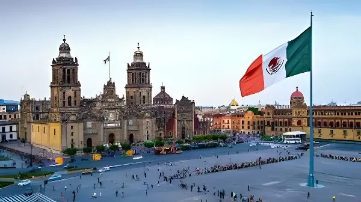

Visible depuis l'espace grâce au satellite NISAR de la NASA, l'affaissement de Mexico est désormais mesuré en temps quasi réel. Certaines zones s'enfoncent de plus de 2 centimètres par mois. Derrière les chiffres, une catastrophe lente et irréversible, aux racines coloniales et aux conséquences humaines, infrastructurelles et géopolitiques profondes.
Le problème de Mexico remonte à sa fondation même. En 1325, les Mexicas — ancêtres des Aztèques — érigèrent Tenochtitlán sur une île au cœur du lac Texcoco. Après la conquête espagnole du XVIe siècle, les autorités coloniales asséchèrent progressivement ce lac pour étendre l'espace urbain. Au début du XXe siècle, la totalité de la vallée avait été drainée artificiellement par un canal de 40 kilomètres et un tunnel creusé à travers les montagnes.
Il reste alors à Mexico ce que les géologues appellent un lit lacustre argileux : des couches d'argile gorgée d'eau, extrêmement compressibles. Construire une métropole de 22 millions d'habitants sur une telle fondation équivaut à poser un immeuble sur une éponge. Dès que l'eau est extraite, l'éponge se compacte — et ne revient jamais à sa forme initiale.
Entre octobre 2025 et janvier 2026, le satellite NISAR — fruit de la collaboration entre la NASA et l'agence spatiale indienne ISRO, lancé le 30 juillet 2025 — a cartographié avec une précision millimétrique les mouvements du sol sous Mexico. Les données confirment que certaines zones s'enfoncent de plus de 2 centimètres par mois dans les secteurs les plus critiques, confirmant un affaissement moyen d'environ 25 centimètres par an dans les zones bâties sur l'ancien lit lacustre.
Les zones les plus critiques incluent l'aéroport international Benito Juárez et le secteur du Paseo de la Reforma, l'artère emblématique de la capitale. David Bekaert, chef de projet à l'Institut flamand de recherche technologique et membre de l'équipe scientifique de NISAR, a déclaré que Mexico est « un point critique connu en matière d'affaissements » et que les données à venir seraient encore plus révélatrices.
Fondation de Tenochtitlán sur le lac Texcoco par les Mexicas.
Drainage progressif du lac Texcoco par les autorités coloniales espagnoles puis mexicaines. Fin du drainage total vers 1900.
Premier ingénieur à documenter scientifiquement l'affaissement du sol à Mexico.
Certaines zones s'affaissaient d'environ 35 cm par an, endommageant les infrastructures dont le métro.
Publication d'une étude de l'Université d'État de l'Oregon dans JGR Solid Earth : affaissement moyen de 50 cm/an dans certaines zones ; le compactage continuera 150 ans, entraînant jusqu'à 30 m d'affaissement supplémentaire.
Crise du « Jour Zéro » : le système Cutzamala tombe à 34,7 % de sa capacité en avril 2024. Des camions-citernes ravitaillent des quartiers entiers. Le scénario catastrophe est finalement évité grâce aux pluies de saison.
Lancement du satellite NISAR par la NASA et l'ISRO depuis le Centre spatial Satish Dhawan (Inde).
NISAR cartographie Mexico en temps quasi réel : certaines zones s'enfoncent de plus de 2 cm/mois. Les données confirment que l'aéroport Benito Juárez figure parmi les secteurs les plus touchés.
L'affaissement n'est pas uniforme, et c'est précisément ce qui le rend si destructeur. Lorsque deux zones voisines s'enfoncent à des rythmes différents, les structures qui les relient — canalisations, voies ferrées, fondations — se déforment et se fissurent. Ce phénomène de subsidence différentielle est au cœur des dégâts observés dans toute la ville.
| Infrastructure | Impact observé | Niveau de risque |
|---|---|---|
| Métro (12 lignes) | Fractures de rails, pentes anormales, réductions de vitesse, effondrement de viaduc (2021) | Critique |
| Réseaux d'eau | Ruptures de canalisations : jusqu'à 40 % des eaux perdues en fuites | Critique |
| Aéroport Benito Juárez | Zone parmi les plus affaissées selon NISAR (oct. 2025 – jan. 2026) | Élevé |
| Centre historique | Cathédrale métropolitaine inclinée ; bâtiments coloniaux fissurés | Élevé |
| Système de drainage | Pentes inversées, risque d'inondation accru en saison des pluies | Élevé |
Le symbole le plus parlant reste l'Ange de l'Indépendance, monument inauguré en 1910 sur le Paseo de la Reforma : depuis sa construction, les autorités ont dû ajouter 14 marches à sa base, au fur et à mesure que le sol se dérobait sous lui. La cathédrale métropolitaine, édifiée entre 1573 et 1813, penche visiblement — son sol n'est plus au niveau, victime de siècles d'affaissement différentiel.
Le paradoxe central de Mexico tient en une équation cruelle : plus la ville pompe d'eau dans l'aquifère pour alimenter ses habitants, plus elle s'enfonce. Or, pomper moins signifie potentiellement manquer d'eau. Actuellement, environ 60 à 70 % de l'eau potable de la ville provient de l'extraction souterraine, une surexploitation telle que moins de la moitié de ce qui est prélevé chaque année est naturellement renouvelé.
La crise du « Jour Zéro » de 2024 a mis en lumière cette dépendance structurelle : lorsque le système Cutzamala — qui assure environ 25 % de l'approvisionnement via des réservoirs extérieurs — est tombé à 34,7 % de sa capacité en avril 2024, la tentation de pomper davantage dans l'aquifère s'est renforcée, aggravant mécaniquement l'affaissement. Un expert de l'UNAM résume la situation : « plus l'aquifère se vide, plus Mexico s'enfonce ».
« L'affaissement de Mexico est une catastrophe au ralenti. Sa vitesse peut varier selon les zones, mais il est permanent et irréversible. »
— Efraín Ovando Shelley, chercheur à l'UNAM, Institut d'ingénierie« Même en récupérant un niveau d'eau plus élevé dans les nappes, le compactage se poursuivrait malgré tout en raison de la faible conductivité hydraulique des argiles. »
— Étude de l'Université d'État de l'Oregon, JGR Solid Earth, 2021Les autorités mexicaines et les experts internationaux s'accordent sur plusieurs pistes, sans qu'aucune ne constitue une solution miracle. La réparation des fuites dans le réseau d'eau — qui représentent jusqu'à 40 % des pertes — est présentée comme la mesure la plus immédiate et la plus rentable. La recharge artificielle des aquifères, qui consiste à réinjecter de l'eau traitée dans le sous-sol, est expérimentée à petite échelle. Le gouvernement de Mexico City vise une utilisation durable de l'aquifère d'ici 2040, un objectif jugé ambitieux par la majorité des hydrologues. Enfin, la surveillance satellitaire via NISAR ouvre la voie à un suivi bâtiment par bâtiment, permettant d'anticiper les effondrements et de prioriser les interventions d'urgence.
Mexico concentre à elle seule plusieurs des défis les plus aigus du siècle : surpopulation urbaine, épuisement des ressources en eau, héritage colonial d'une planification environnementale désastreuse, et vulnérabilité sismique dans une ville qui s'est effondrée en 1985 sous un séisme de magnitude 8,1. L'affaissement ajoute une dimension supplémentaire à ce portrait : un risque lent, difficilement visible, mais dont les effets cumulés sur les infrastructures, la santé publique et les inégalités sociales sont déjà considérables. La ville la plus peuplée d'Amérique du Nord disparaît centimètre par centimètre sous le poids de sa propre histoire.
Visible desde el espacio gracias al satélite NISAR de la NASA, el hundimiento de Ciudad de México se mide ahora en tiempo casi real. Algunas zonas se hunden más de 2 centímetros al mes. Detrás de las cifras, una catástrofe lenta e irreversible, con raíces coloniales y consecuencias humanas, infraestructurales y geopolíticas profundas.
El problema de Ciudad de México se remonta a su propia fundación. En 1325, los mexicas fundaron Tenochtitlán en una isla en el corazón del lago Texcoco. Tras la conquista española del siglo XVI, las autoridades coloniales fueron drenando progresivamente el lago para expandir el espacio urbano. A principios del siglo XX, todo el valle había sido drenado artificialmente mediante un canal de 40 kilómetros y un túnel perforado a través de las montañas.
Lo que quedó bajo Ciudad de México es lo que los geólogos denominan un lecho lacustre arcilloso: capas de arcilla saturada de agua, extremadamente compresibles. Construir una metrópolis de 22 millones de habitantes sobre semejante cimiento equivale a levantar un edificio sobre una esponja. En cuanto se extrae el agua, la esponja se compacta — y nunca vuelve a su forma original.
Entre octubre de 2025 y enero de 2026, el satélite NISAR — fruto de la colaboración entre la NASA y la agencia espacial india ISRO, lanzado el 30 de julio de 2025 — cartografió con precisión milimétrica los movimientos del suelo bajo Ciudad de México. Los datos confirman que algunas zonas se hunden más de 2 centímetros al mes en los sectores más críticos, confirmando un hundimiento medio de aproximadamente 25 centímetros al año en las zonas edificadas sobre el antiguo lecho lacustre.
Las zonas más críticas incluyen el aeropuerto internacional Benito Juárez y el sector del Paseo de la Reforma. David Bekaert, jefe de proyecto en el Instituto Flamenco de Investigación Tecnológica y miembro del equipo científico de NISAR, declaró que Ciudad de México es «un punto crítico conocido en materia de subsidencias» y que los datos por recopilar serán aún más reveladores.
Fundación de Tenochtitlán sobre el lago Texcoco por los mexicas.
Drenaje progresivo del lago Texcoco. El valle queda completamente drenado hacia 1900.
Primer registro científico del hundimiento del suelo en Ciudad de México.
Algunas zonas se hundían unos 35 cm al año, dañando infraestructuras como el metro.
Estudio de la Universidad de Oregon (JGR Solid Earth): hundimiento medio de 50 cm/año en ciertas zonas; la compactación continuará 150 años más, con hasta 30 m adicionales de hundimiento.
Crisis del «Día Cero»: el sistema Cutzamala cae al 34,7 % de su capacidad en abril de 2024. Camiones cisterna abastecen barrios enteros.
NISAR cartografía Ciudad de México en tiempo casi real: algunas zonas se hunden más de 2 cm/mes. El aeropuerto Benito Juárez figura entre los sectores más afectados.
El hundimiento no es uniforme, y es precisamente eso lo que lo hace tan destructivo. Cuando dos zonas vecinas se hunden a ritmos distintos, las estructuras que las conectan — tuberías, vías férreas, cimientos — se deforman y agrietan. Este fenómeno de subsidencia diferencial es el principal responsable de los daños observados en toda la ciudad.
| Infraestructura | Impacto observado | Nivel de riesgo |
|---|---|---|
| Metro (12 líneas) | Fracturas de raíles, pendientes anómalas, derrumbe de viaducto (2021) | Crítico |
| Redes de agua | Roturas de tuberías: hasta el 40 % del agua se pierde en fugas | Crítico |
| Aeropuerto Benito Juárez | Zona de mayor hundimiento según NISAR (oct. 2025 – en. 2026) | Alto |
| Centro histórico | Catedral metropolitana inclinada; edificios coloniales con grietas | Alto |
| Sistema de drenaje | Pendientes invertidas, mayor riesgo de inundación en temporada de lluvias | Alto |
El símbolo más elocuente es el Ángel de la Independencia, monumento inaugurado en 1910 sobre el Paseo de la Reforma: desde su construcción, las autoridades han tenido que añadir 14 escalones a su base, a medida que el suelo se hundía bajo él. La catedral metropolitana, construida entre 1573 y 1813, se inclina visiblemente — consecuencia de siglos de subsidencia diferencial.
La paradoja central de Ciudad de México se resume en una ecuación cruel: cuanta más agua extrae del acuífero para abastecer a sus habitantes, más se hunde. Pero extraer menos significa potencialmente quedarse sin agua. Actualmente, entre el 60 y el 70 % del agua potable de la ciudad proviene de la extracción subterránea — una sobreexplotación tal que menos de la mitad de lo extraído cada año se renueva de forma natural.
La crisis del «Día Cero» de 2024 puso de manifiesto esta dependencia estructural: cuando el sistema Cutzamala cayó al 34,7 % de su capacidad en abril de 2024, la tentación de bombear más del acuífero se intensificó, agravando mecánicamente el hundimiento. Un experto de la UNAM lo resume así: «cuanto más se vacía el acuífero, más se hunde Ciudad de México».
«El hundimiento de Ciudad de México es un desastre de acción lenta. Su velocidad puede variar según las zonas, pero es permanente e irreversible.»
— Efraín Ovando Shelley, investigador de la UNAM, Instituto de Ingeniería«Incluso recuperando niveles de agua más altos en los acuíferos, la compactación continuaría igualmente debido a la baja conductividad hidráulica de las arcillas.»
— Estudio de la Universidad Estatal de Oregon, JGR Solid Earth, 2021Ciudad de México concentra por sí sola varios de los desafíos más agudos del siglo: superpoblación urbana, agotamiento de los recursos hídricos, herencia colonial de una planificación medioambiental desastrosa y vulnerabilidad sísmica — la ciudad se derrumbó en 1985 bajo un terremoto de magnitud 8,1. El hundimiento añade una dimensión adicional: un riesgo lento, difícilmente visible, pero cuyos efectos acumulados sobre las infraestructuras, la salud pública y las desigualdades sociales ya son considerables. La ciudad más poblada de América del Norte desaparece centímetro a centímetro bajo el peso de su propia historia.